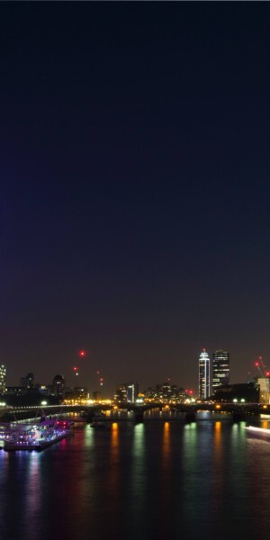
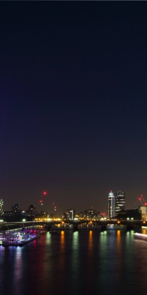

Il mio viaggio a Londra
 


Le mie spese
| Numero |
Descrizione |
Costo |
| 1 |
Biglietto Aereo |
120€ |
| 1 |
Biglietto Aereo |
120€ |
| 1 |
Biglietto Aereo |
120€ |
| Totale |
|
360€ |
Cose da fare
- Visitare la tower of london ✖
- Visitare Greenwich ✔
- Ascoltare un artista di strada a Coven Garden ✔
- Mangiare il tipico Fish and Chips inglese ✖
Info utili:
-
Numeri utili di emergenza
- 999 - Emergenza
- 101 - Numero polizia
- 111 - Numero assistenza medica
-
Hotel
- Nome Hotel - Numero assistenza medica
- Indirizzo Hotel - Numero assistenza medica
-
Aereo
- Volo andata Y1234X, 9,30 da Milano Malpensa
- Volo ritorno Y1236X, ore 18:30vda London Heathrow
Le foto